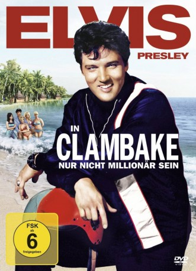

#9962 Nur nicht Millionär sein
Alternativ: Clambake
 
 IMDB-Wertung: 5.5 / 10
IMDB-Wertung: 5.5 / 10  Metascore: 0
Metascore: 0 
Scott, Sohn eines texanischen Ölmillionärs, will seine Ferien in Florida verbringen. Er hat es satt, dass die Frauen ihn nur seines Geldes wegen anschmachten.Würdne sie ihm auch als armen Schlucker begehren? Er will es wissen – und tauscht mit dem Wasserskilehrer Tom doe Rollen. Bald fängt sein Herz Feuer für die schöne Dianne, die sich aber am Strand von Miami einen reichen Mann an Land ziehen will. Ausgerechnet er soll ihr dabei behilflich sein.
Jahr: 1967
Dauer: 98 Minuten
FSK: 6
Land: USA Studio: United ArtistsTonspuren:
Untertitel:
Auflösung: 1080p (1920x816) Größe: 7823 MB
Genre: Komödie, Musical
Regisseur: Arthur H. Nadel
Drehbuch: Arthur Browne Jr.
Soundtrack: Jeff Alexander
Darsteller:
 Elvis Presley als Scott Hayward / 'Tom Wilson'
Elvis Presley als Scott Hayward / 'Tom Wilson'- Shelley Fabares als Dianne Carter
- Will Hutchins als Tom Wilson / 'Scott Heyward'
- Bill Bixby als James J. Jamison III
 Gary Merrill als Sam
Gary Merrill als Sam- James Gregory als Duster Heyward
- Harold Peary als Doorman
- Marj Dusay als Waitress
- Jack Good als Hathaway
- Angelique Pettyjohn als Gloria
- Sue England als Cigarette Girl
- Lee Krieger als Bartender
 Corbin Bernsen als Boy at Playground (uncredited)
Corbin Bernsen als Boy at Playground (uncredited)- Richard Davis als Bit (uncredited)
 Teri Garr als Dancer (uncredited)
Teri Garr als Dancer (uncredited) Lee Majors als Man in Restaurant (uncredited)
Lee Majors als Man in Restaurant (uncredited) Red West als Ice Cream Vendor (uncredited)
Red West als Ice Cream Vendor (uncredited)- Suzie Kaye als Sally
- Olga Kaya als Gigi
- Sam Riddle als Announcer
- Wallace Earl Laven als Ellie
- Arlene Charles als Olive
- Steve Cory als Bellhop
- Melvin F. Allen als Crewman (uncredited)
- Mark Anthony als Boy at Playground (uncredited)
- Herb Barnett als Waiter (uncredited)
- Joe Esposito als Bit (uncredited)
- Charlie Hodge als Mr. Hayward's Barber (uncredited)
- Francis Humphrey Howard als Bit (uncredited)
- Jonathan Kramer als Dancer at Clambake Party (uncredited)
- Robert P. Lieb als Mr. Barasch (uncredited)
 Dal McKennon als Bearded Gas Station Attendant (uncredited)
Dal McKennon als Bearded Gas Station Attendant (uncredited)- Christopher Riordan als Beach Boy (uncredited)
- Lisa Slagle als Lisa (uncredited)
- Roberta Tennes als Dancer (uncredited)
Datei: X:\1967\Nur nicht Millionär sein (1967, FSK6, 1920x816).mkv seit 15.11.2018
Festplatte: Gemischt-01+Anime
 Es gibt insgesamt 24 Filme in der Gruppe '1967'
Es gibt insgesamt 24 Filme in der Gruppe '1967'